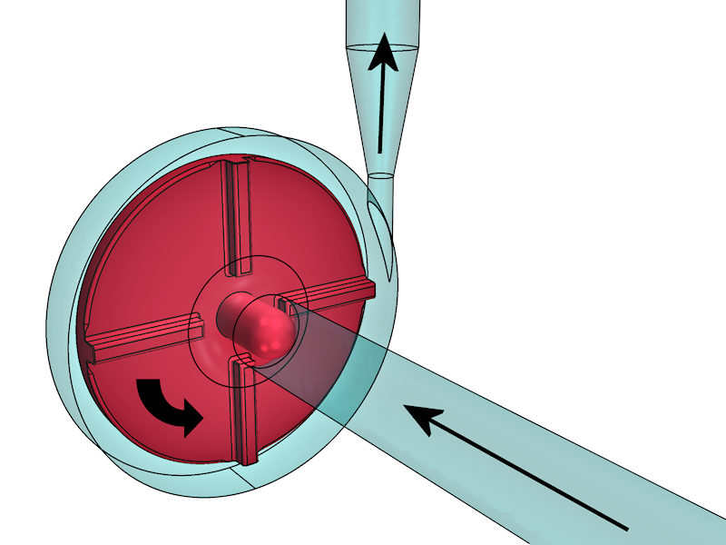

|
|
|
||||||||||||||||||
|
Welcome to the FDA's Computational Fluid Dynamics (CFD) /Blood Damage Project – A Collaborative Research Project Open to CFD InvestigatorsInterlaboratory Study #2 – Simplified Blood Pump
The purpose of this project is to determine how computational fluid dynamics can be effectively used to characterize fluid flow and to predict blood damage in medical devices. To address this complex issue, FDA has partnered with academia and industry under the Critical Path Initiative program to advance the application of CFD technology in the development and evaluation of medical devices.
In order to better understand the state of the art of how CFD is currently applied to medical devices, a practical evaluation will be conducted of two different benchmark flow models, developed by the project’s Technical Steering Committee. The results of the first study in a simple nozzle model are available at our website (https://fdacfd.nci.nih.gov/). Anyone who wishes to participate in the next phase of the project may perform computational simulations of our second model (a blood pump) using the parameters described in this document; this is essentially an interlaboratory study investigation of a virtual model. For comparison and validation of the computational simulations, three select laboratories will perform quantitative flow visualization measurements on physical models. The FDA will collect the data from the simulations, analyze the results in a blinded fashion (i.e. the identification of the person who sent in the data will be removed and replaced with a unique identifier), and then compare and present the collective results. As the results are published, the raw data will be made available at https://fdacfd.nci.nih.gov/, along with presentations, papers, and other documentation. We hope that the two models will serve as benchmarks for future CFD evaluations.
Participants will also be invited to predict the amount of blood damage which might occur for flow through the pump model under different conditions. For comparison to the computational predictions, in vitro blood damage experiments will be performed at two laboratories.
The goal of the project is to contribute to FDA Guidance Documents and standards organizations (e.g., ASME V&V 40) to improve the use of computer modeling in the evaluation of medical devices. Our contributions will be based on the techniques utilized, the results obtained, and the suggestions made by researchers in the performance of the CFD, flow visualization, and blood damage experiments for this project. To encourage participation, this project is open to anyone who wishes to participate, comment, or provide suggestions.
If you would like to participate, follow these steps:
þ Sign up (to receive the login and password for submitting your data) þ Submit your data by July 31, 2014. þ Notify us your data is on our server
Project Timeline:
Please browse these pages to find out more information. We value your participation and suggestions, so please sign up to participate and receive project updates!
|